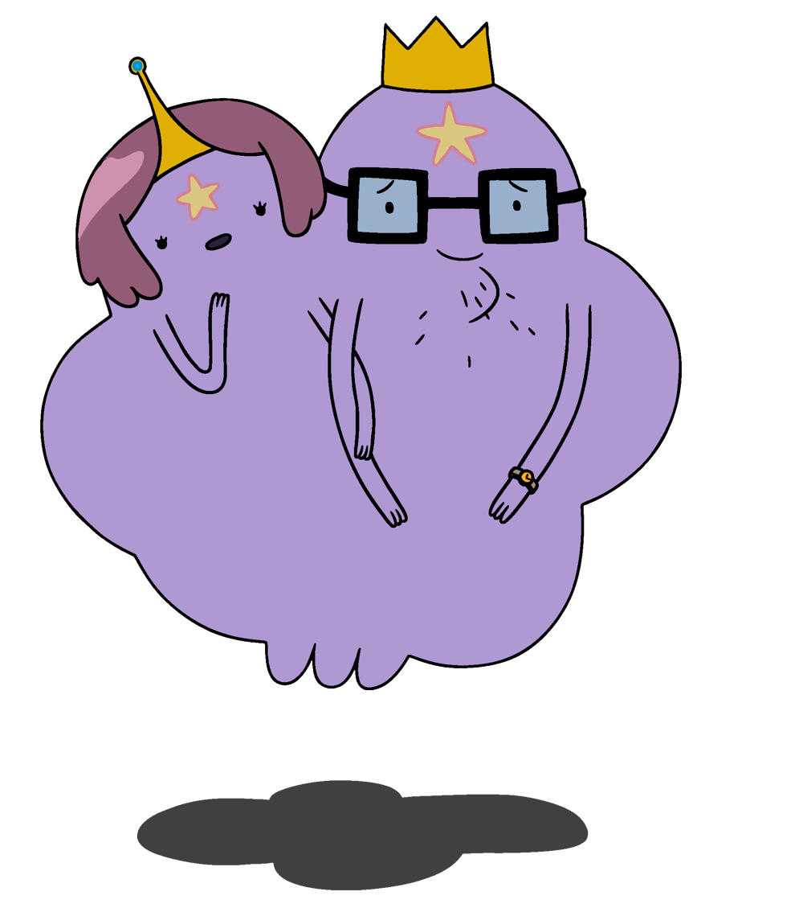

La Princesa Grumosa es la heredera del Reino Grumoso y uno de los personajes más carismáticos de "Hora de Aventura". Se caracteriza por su actitud arrogante, su tono de voz fuerte y su deseo de independencia.
Es un personaje orgulloso y a veces dramático. Aunque suele ser egocéntrica y testaruda, en el fondo tiene un buen corazón y en algunas ocasiones ha demostrado ser una amiga leal para Finn y Jake.
La Princesa Grumosa es hija del Rey y la Reina Grumosa, los gobernantes del Reino Grumoso. Sus padres son estrictos y esperan que se comporte como una princesa adecuada, lo que genera conflictos entre ellos, ya que ella prefiere vivir libremente sin seguir las normas del reino.
A lo largo de la serie, la Princesa Grumosa pasa por varias aventuras, incluyendo su autoexilio del Reino Grumoso para vivir en la naturaleza. Aunque a menudo se pelea con sus padres y otros personajes, demuestra ser una persona fuerte e independiente que siempre busca su propio camino.